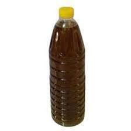
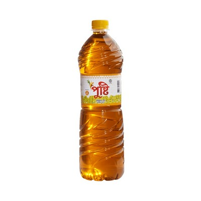
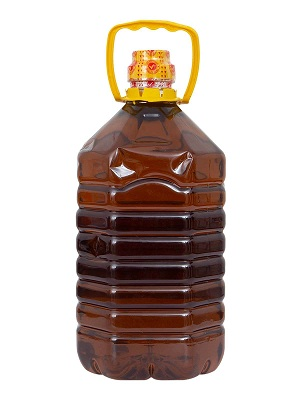

Mustard oil is making from pressing the seeds of a mustard plant to produce a spicy and yellow color oil.
It is popular in Eastern cooking, although some European countries have begun experimenting with the oil.
In Bangladesh, this is historically very common to people of every class and has become an essential oil for most.
1 Litter
Prize :200Tk/180Tk
2 Litter
Prize :500Tk/450Tk
5 litter
Prize :1000Tk/950Tk